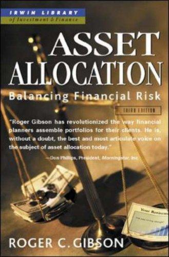

罗杰·吉布森（Roger C. Gibson）是吉布森资本管理公司（Gibson Capital Management）首席投资官，持有CFA和CFP双重专业资格，是资产配置和投资组合设计领域国际公认的专家。《资产配置：平衡金融风险》首版于1990年由道琼斯-欧文出版社出版，此后经历了五次修订，最新第五版（2013年）由麦格劳-希尔出版，并增加了克里斯托弗·西多尼（Christopher J. Sidoni）作为合著者。首版由二十世纪最伟大的投资者之一约翰·邓普顿爵士（Sir John M. Templeton）作序——吉布森曾表示，邓普顿是"在精神和专业上都给予他启发的人"。中文版《资产分配》（原书第五版）由机械工业出版社2014年出版，赵玉洁翻译。
本书以现代投资组合理论（MPT）为基础，系统阐述了资产配置的原理与实践。吉布森的核心论点是：投资组合中不同资产类别的配置比例——即在股票、债券、房地产证券、大宗商品挂钩证券和通胀保值国债（TIPS）等资产之间如何分配——对投资结果的影响远大于在某一类别内选择具体证券。书中对每一类资产的风险收益特征做了详尽分析，并用大量数据证明，将低相关性的多种资产组合在一起，可以使组合的年化回报趋近于各成分资产平均回报的同时显著降低波动率——这就是多元化的力量。吉布森主张战略性资产配置，强调顺应而非对抗资本市场的力量，同时识别出影响投资成功的情绪和心理陷阱，指出纪律和长期思维的重要性。书中还提供了包含四至五种资产类别的模型组合，作为实际操作的框架。
伯恩斯坦在"高效前沿"推荐书单中对本书的评价是："涵盖了与我自己著作相同的领域，但更侧重于个别资产的特质分析。仅适合硬核爱好者，面向理财顾问。"邓普顿为首版撰写的序言本身就是对本书价值的有力背书——这位创建了全球第一批国际投资基金的传奇投资者的推荐，赋予了本书极高的专业公信力。
《资产配置》的读者主要是理财顾问和认真对待投资的个人投资者，其技术深度高于大多数通俗投资读物。但它所传达的核心理念——资产配置决定投资成败，多元化是唯一免费的午餐——对每一位追求长期稳健回报的投资者都至关重要。